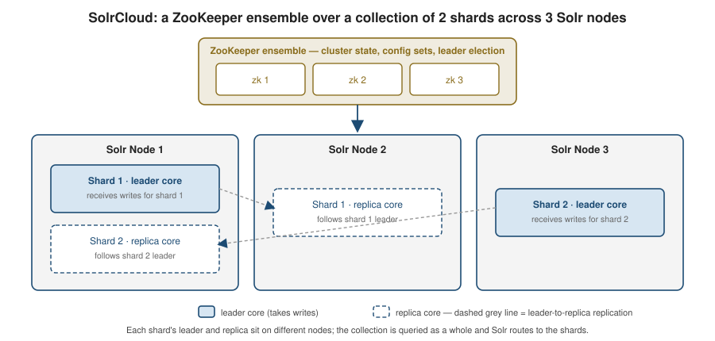

Apache Solr
|
This content was generated with the assistance of AI and should be verified against the official documentation before being relied on in production. |
Apache Solr is a search server built on Apache Lucene. This page is an overview of its model — cores and collections, schema and analysis, querying, and SolrCloud — and of how a Spring Boot application talks to it now that Spring Data Solr is retired. For the in-depth reference, see Apache Solr Reference.
Solr in one paragraph
Solr wraps a Lucene index in a standalone server process and exposes it over HTTP with JSON (or XML) request and response bodies. You index documents by POSTing them to an update endpoint and search by issuing GET/POST requests to a query endpoint; configuration — the schema, the request handlers, caches — lives in files (or a running-config API) rather than in your application. Solr and Elasticsearch are both Lucene-based search servers with overlapping capabilities; Solr leans toward explicit, file-based configuration and a long history of text-search features, Elasticsearch toward a JSON-native API and analytics/aggregations. The choice between them is discussed at the end of this page.
Cores, collections, and schema
-
A core is a single running Lucene index plus its configuration (schema, request handlers, caches). A single-node Solr can host several cores.
-
A collection is the SolrCloud-level abstraction: one logical index made of many shards, each replicated across nodes. Each shard replica is physically a core. Application code queries the collection and Solr routes to the shards.
-
The schema (
schema.xml, or the managed schema edited through the Schema API) defines field types and the fields that use them. A field type bundles a Lucene type with an analysis chain — the tokenizer and filters applied at index time and query time, exactly the character-filter → tokenizer → token-filter pipeline described on the Elasticsearch page. -
copyFieldfans one input field into several indexed forms — for example copytitleinto a stemmed-and-analyzedtitle_textfor relevance and into an un-analyzedtitle_strfor sorting and faceting, all populated from one value in the incoming document.
Querying
-
A request goes to a request handler — most commonly
/selectfor search — configured insolrconfig.xmlwith default parameters. -
A query parser interprets the
qparameter. The standard (Lucene) parser exposes full Lucene syntax and is strict about it; DisMax ("maximum disjunction") is built for user-entered strings — it spreads the terms across a configured set of fields with per-field boosts and never throws a syntax error; eDisMax (extended DisMax) adds boost functions, phrase-proximity boosts, and a safe subset of full Lucene syntax. -
Filter queries (
fq) express conditions that only include or exclude documents. They do not affect the relevance score and their result sets are cached independently in the filter cache, so repeated filters (a category, a date bucket, a tenant) are cheap. Keep scoring conditions inqand yes/no conditions infq. -
One line each on the classic add-on components: faceting returns counts per field value or per range alongside the results; highlighting returns snippets of matched text with the query terms marked; spellcheck / suggest offers "did you mean" corrections and type-ahead completions.
-
Application code is usually better served by the JSON Request API (a JSON body instead of hand-built query strings) and, for embedding-based retrieval, the
\{!knn}query parser for dense-vector search — see JSON Request API and Dense Vector Search.
SolrCloud
SolrCloud is Solr’s clustered mode:
-
A ZooKeeper ensemble holds the authoritative cluster state and the shared configuration ("config sets"), and coordinates leader election. Production runs an odd number of ZooKeeper nodes (typically 3) for quorum.
-
A collection is split into shards; each shard has one leader replica and zero or more follower replicas, and each replica has a type —
NRT(indexes and searches, eligible to become leader),TLOG(indexes via the transaction log and can search, but skips local Lucene indexing until promoted), orPULL(read-only, pulls segments from aTLOGleader) — traded off between indexing cost and search capacity; see SolrCloud Architecture. Writes go to the leader and are forwarded to the replicas; reads can be served by any replica. -
Visibility is controlled by commits: a soft commit makes recent documents searchable quickly (near real time) without guaranteeing they are on disk; a hard commit flushes and fsyncs to durable storage. Tuning the two intervals trades write throughput and index-visibility latency against I/O.
-
In application code, prefer
commitWithinon the update request (or a scheduledautoSoftCommit/autoCommitinsolrconfig.xml) over callingcommit()explicitly after every write — see Indexing & Updates and the warning below.

Spring Boot integration
Spring Data Solr is discontinued. It was moved to the Spring Attic and is not compatible with Spring Boot
3+/4 — see Spring Data for Apache
Solr discontinued. There is no spring-boot-starter-data-solr and Spring Boot has no Solr
auto-configuration.
The current approach is to use SolrJ, the official Java client, directly:
-
Add
org.apache.solr:solr-solrj. -
Declare a
SolrClient@Beanyourself —Http2SolrClientpointed at a single node’s base URL, orCloudSolrClientpointed at the ZooKeeper ensemble for SolrCloud. Bind the endpoint from an@ConfigurationPropertiesrecord. -
Index with
SolrInputDocument(client.add(collection, doc)thenclient.commit(collection)), and query by building aSolrQueryand callingclient.query(collection, query). -
Integration-test against a real server with the Testcontainers
SolrContainer— see Unit and Integration Testing.
|
The |
@ConfigurationProperties(prefix = "app.solr")
public record SolrProperties(String baseUrl, String collection) {
}
@Configuration
@EnableConfigurationProperties(SolrProperties.class)
public class SolrConfig {
@Bean(destroyMethod = "close")
public SolrClient solrClient(SolrProperties props) {
return new Http2SolrClient.Builder(props.baseUrl())
.withConnectionTimeout(3L, TimeUnit.SECONDS)
.withRequestTimeout(30L, TimeUnit.SECONDS)
.build();
// for SolrCloud:
// new CloudSolrClient.Builder(List.of("zk1:2181", "zk2:2181", "zk3:2181"), Optional.empty()).build();
}
}
@Service
public class BookSearchService {
private final SolrClient solr;
private final String collection;
public BookSearchService(SolrClient solr, SolrProperties props) {
this.solr = solr;
this.collection = props.collection();
}
public void index(String id, String title, String genre) throws Exception {
SolrInputDocument doc = new SolrInputDocument();
doc.addField("id", id);
doc.addField("title", title);
doc.addField("genre", genre);
solr.add(collection, doc);
solr.commit(collection);
}
public List<String> searchTitles(String text, String genre) throws Exception {
SolrQuery query = new SolrQuery(text);
query.set("defType", "edismax");
query.set("qf", "title");
query.addFilterQuery("genre:" + genre); // fq: not scored, cached
query.setRows(20);
return solr.query(collection, query).getResults().stream()
.map(doc -> (String) doc.getFieldValue("title"))
.toList();
}
}app:
solr:
base-url: http://localhost:8983/solr
collection: booksSolr vs. Elasticsearch — how to choose
Both are mature, Lucene-based, and cover the same core ground. Lean Solr when you want explicit, versioned, file-based configuration, run text-search-heavy workloads that fit its long-established feature set, or already operate ZooKeeper. Lean Elasticsearch when you want a JSON-native API with first-class client libraries, heavy use of aggregations/analytics, or its broader managed-service and ecosystem support — and note that its Spring integration (Elasticsearch) is actively maintained, whereas Solr’s is now hand-rolled on SolrJ. For a green-field Spring Boot service with ordinary search needs, Elasticsearch is usually the lower-friction choice; an existing Solr deployment is rarely worth migrating on its own. For the full comparison — strengths/weaknesses on each side, licensing history, and the "is Solr discontinued?" question answered precisely — see Solr vs. Elasticsearch.
References
-
Apache Solr Reference — the dedicated in-depth reference section